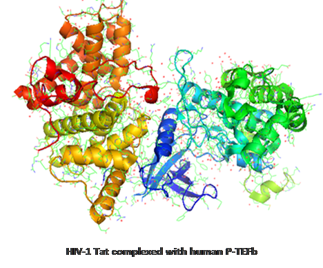

|
In-silico Prediction of Host-Pathogen Interactions by Wajid Arshad Abbasi and Fayyaz ul Amir Afsar Minhas Department of Computer and Information Sciences, PIEAS, Nilore, Islamabad, Pakistan |
What are Host-Pathogen Interactions (HPIs)? Host-pathogen interactions are the interactions taking place between a pathogen (e.g. virus, bacteria) and their host (e.g. humans, plants). Host-pathogen interactions can be described on the population level (virus infections in a human population), on the single-cell level (individual encounters of host and bacteria), on the organismal level (e.g. virus infects host), or on the molecular level (e.g. virus protein binds to receptor on human cell). Shown below is the interaction (brown and blue lines) between human P-TEFb protein and the HIV-1 Tat protein.  |
|
HPI prediction Invasion of a host organism by pathogens like viruses or bacteria and the reactions of the host to these pathogens is known as infection (National Institute of Health, 2007). Infectious diseases, such as Tuberculosis, Hepatitis, AIDS, and Typhoid etc., are among the major causes of deaths in the world (WHO, 2008). Therefore, to understand the underlying mechanism of infectious diseases, it is crucial to gain an insight into host-pathogen interaction (HPI) also known as host-pathogen protein-protein interactions (PPIs). Experimental methods for studying PPIs are often time-consuming and expensive. Therefore, there is an utmost need for computational approaches to support wet-lab methods by predicting promising PPIs. |
|
Following is the list of running projects in PIEAS Biomedical Informatics Research Laboratory:
|
|